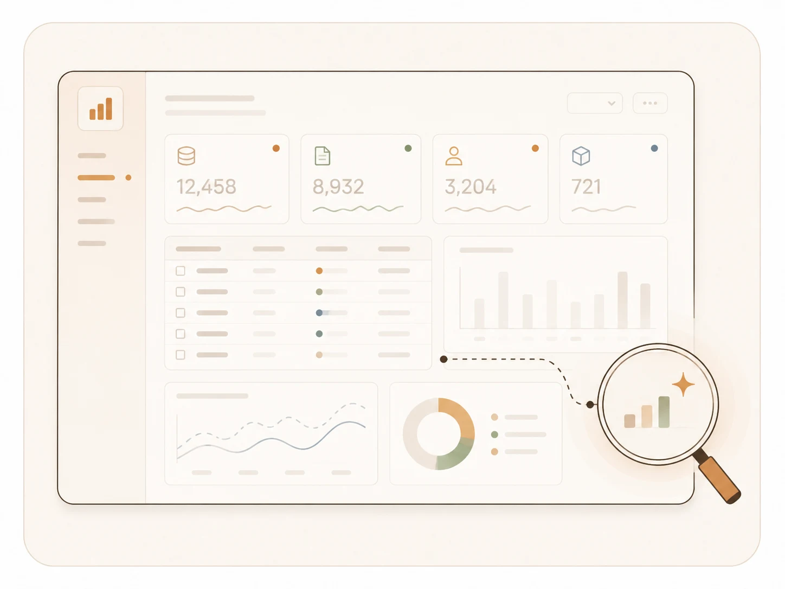
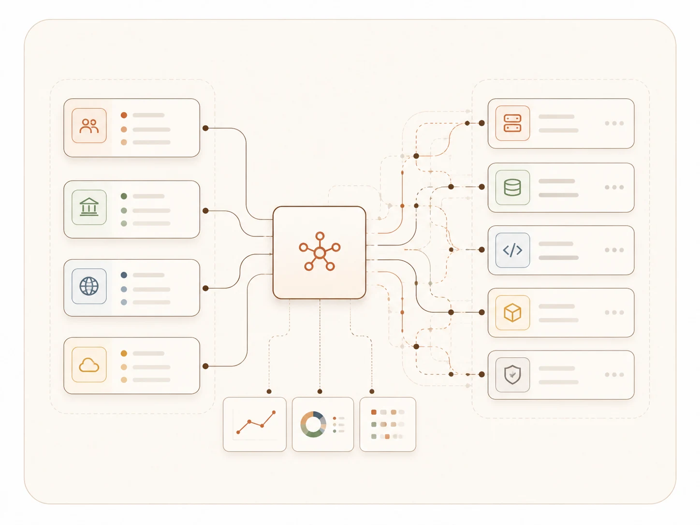

Fragmented Systems
Across agencies, departments, and platforms.
For governments and enterprises in complex environments — we design, build, and run the systems that ship. From strategy to AI to operations, all by the same hands.


We are typically engaged when organisations face complexity across systems, data, and stakeholders — that's the moment we do our best work.
Across agencies, departments, and platforms.

Information without insight.

Strategy disconnected from execution.

Many stakeholders, environments, systems.
A connected practice covering strategy, systems, data, and transformation — designed to operate at scale, in complex real-world environments.
System architecture, portals, integrations, and cloud platforms designed to operate at scale.
BuildData architecture, dashboards, predictive models, and decision-support intelligence layers.
ThinkWorkflow automation, AI-assisted operations, and integration of agents into existing systems.
AutoDigital strategy, programme governance, transformation advisory, and operating model design.
GuideA consistent approach across every engagement — from first brief to live system.
drag to spin
Three engagements across government and enterprise — live, deployed, in production today.
Institutions and delivery teams turning complex mandates into usable digital systems — these are the folks we partner with.
Multi-agency digital mandates
Institutions coordinating services, systems, and public data across complex environments.
Operating at institutional scale
Organisations modernising core systems, analytics layers, and operational workflows.
Shared implementation depth
Partner teams needing architecture, data, automation, or delivery support to ship the work.
From concept to usable systems
New ventures translating ideas into platforms, pilots, and deployable products.

Drop us a note. We'll have a real conversation about your context, your constraints, and whether we're the right crew for it.